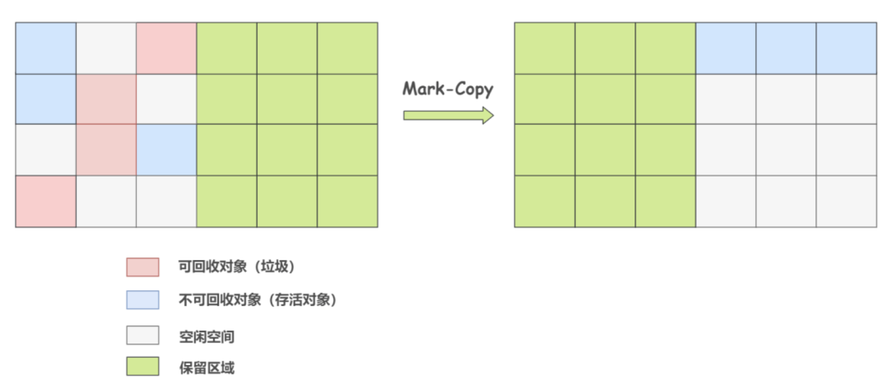

JVM：详解GC
前言
据我看到的面试题有：判断垃圾回收的算法有什么，以及是什么原理，垃圾收集算法有什么，常见的垃圾回收器有什么，什么是STW等，所以这篇博客基于GC给大家介绍，如果有其他面试题可以在评论区发言，博客可修改内容，可添加。
一、判断垃圾回收的算法
先提前说两个算法，分别是：
引用标记算法
可达性分析算法
1.引用标记算法
引用标记算法是在Java对象头（Java对象头在介绍多线程的时候有详细的解释，直达链接：Java多线程：三、多线程锁、java锁的实现）中开辟空间，记录被引用的次数（Reference Count），如果A变量被其他对象引用时计数器+1，引用A变量的其他变量被删除则-1，如果计数器为0时，则判断A变量需要被回收。
举个例子：
1 | String str = "我不想上早八"; |
此时，在Java虚拟机栈（以下简称栈）开辟一个内存空间记录str，此时堆中的字符串常量池的“我不想上早八”，被引用的次数就是1（Reference Count=1），此时我做修改操作：
1 | String str = "其实我想上早七"; |
此时，在栈中的变量str原本引用常量池的”我不想上早八”引用次数为0，那么这一块就会被回收。
引用标记算法的回收机制遍布整个代码运行时期而没有集中于垃圾回收时期，因此不属于”Stop-The-World”的范围。
“Stop The World”是 Java 垃圾收集中的一个重要概念。在垃圾收集过程中，JVM 会暂停所有的用户线程，这种暂停被称为”Stop The World”事件。
这么做的主要原因是为了防止在垃圾收集过程中，用户线程修改了堆中的对象，导致垃圾收集器无法准确地收集垃圾。
引用标记算法存在的问题：
无法解决循环依赖的问题，看代码
1 | public class ReferenceCountingGC { |
在代码中a,b变量相互引用，即使将将 a 和 b 设置为 null，也无法将字符串的引用改变（即Reference Count没有被减到0）。从案例可以知道，这样写永远无法通知GC对这两个字符串进行收集。
2.可达性分析算法
现代虚拟机基本都是采用可达性分析算法来判断对象是否存活，可达性算法的原理是以一系列叫做 GC Root 的对象为起点出发，引出它们指向的下一个节点，再以下个节点为起点，引出此节点指向的下一个结点。这样通过 GC Root 串成的一条线就叫引用链），直到所有的结点都遍历完毕,如果相关对象不在任意一个以 GC Root 为起点的引用链中，则这些对象会被判断为垃圾对象,会被 GC 回收。
a, b 对象可回收，就一定会被回收吗?
并不是，对象的 finalize 方法给了对象一次垂死挣扎的机会，当对象不可达（可回收）时，当发生GC时，会先判断对象是否执行了 finalize 方法，如果未执行，则会先执行 finalize 方法，我们可以在此方法里将当前对象与 GC Roots 关联，这样执行 finalize 方法之后，GC 会再次判断对象是否可达，如果不可达，则会被回收，如果可达，则不回收！
注意： finalize 方法只会被执行一次，如果第一次执行 finalize 方法此对象变成了可达确实不会回收，但如果对象再次被 GC，则会忽略 finalize 方法，对象会被回收！这一点切记!
GC Roots 到底是什么东西呢，哪些对象可以作为 GC Root 呢？
- 虚拟机栈（栈帧中的本地变量表）中引用的对象
- 本地方法栈中 JNI（即一般说的 Native 方法）引用的对象
- 方法区中类静态属性引用的对象
- 方法区中常量引用的对象
关于这四个例子可以参考：GC Roots 是什么？哪些对象可以作为 GC Root？看完秒懂！-CSDN博客
二、八股：垃圾收集算法
阿里八股16题，我们来详细的谈谈：
1.标记清除算法
标记清除算法（Mark-Sweep）是最基础的一种垃圾回收算法，它分为 2 部分，先把内存区域中的这些对象进行标记，哪些属于可回收的标记出来（用前面提到的可达性分析法），然后把这些垃圾拎出来清理掉。
标记清除算法存在一个缺陷，在垃圾回收以后会产生内存碎片，无法应对需要一口气分配大内存的情况。
内存碎片化是指在内存分配和回收过程中，被释放的内存空间没有被合并成较大的连续空间，而是形成了许多小块的、不连续的内存区域。这会导致在后续需要分配大块连续内存时，系统可能无法找到足够的连续空间，从而影响程序的性能和稳定性。
2.复制算法
复制算法（Copying）是在标记清除算法上演化而来的，用于解决标记清除算法的内存碎片问题。它将可用内存按容量划分为大小相等的两块，每次只使用其中的一块。
当这一块的内存用完了，就将还存活着的对象复制到另外一块上面，然后再把已使用过的内存空间一次清理掉。这样就保证了内存的连续性，逻辑清晰，运行高效。

但是也是存在一个大缺陷，相当于一大堆的内存我只能当一半用。
3.标记整理算法
标记整理算法（Mark-Compact），标记过程仍然与标记清除算法一样，但后续步骤不是直接对可回收对象进行清理，而是让所有存活的对象都向一端移动，再清理掉端边界以外的内存区域。

标记整理算法一方面在标记-清除算法上做了升级，解决了内存碎片的问题，也规避了复制算法只能利用一半内存区域的弊端。看起来很美好，但内存变动更频繁，需要整理所有存活对象的引用地址，在效率上比复制算法差很多。
4.分代收集算法
4.1 分代收集算法组合拳
分代收集算法（Generational Collection）严格来说并不是一种思想或理论，而是融合上述 3 种基础的算法思想，而产生的针对不同情况所采用不同算法的一套组合拳。
根据对象存活周期的不同会将内存划分为几块，一般是把 Java 堆分为新生代和老年代，这样就可以根据各个年代的特点采用最适当的收集算法。
在新生代中，每次垃圾收集时都发现有大批对象死去，只有少量存活，那就选用复制算法，只需要付出少量存活对象的复制成本就可以完成收集。
老年代中因为对象存活率高、没有额外空间对它进行分配担保，就必须使用标记清理或者标记整理算法来进行回收。
这里提到了新生代和永久代，在JVM运行时数据区中也提到了一个”代“叫永久代，还记得永久代是什么吗？
永久代也叫方法区，在jdk8之后被代替成了元空间，运行时常量池放在元空间中，而字符串常量池在堆中。
4.2 新生代和老年代
堆主要分为 2 个区域，年轻代与老年代，其中年轻代又分 Eden 区和 Survivor 区，其中 Survivor 区又分 From 和 To 两个区。
4.2.1 Eden 区
据 IBM 公司之前的研究表明，有将近 98% 的对象是朝生夕死，所以针对这一现状，大多数情况下，对象会在新生代 Eden 区中进行分配，当 Eden 区没有足够空间进行分配时，JVM 会发起一次 Minor GC，Minor GC 相比 Major GC 更频繁，回收速度也更快。
通过 Minor GC 之后，Eden 区中绝大部分对象会被回收，而那些无需回收的存活对象，将会进到 Survivor 的 From 区，如果 From 区不够，则直接进入 To 区。
什么是Minor GC和Major GC？
Minor GC是新生代的GC，Major GC是老年代的GC
Survivor区的from和to角色切换
- 初始状态
- 在JVM启动时，两个Survivor区中的一个被指定为from区，另一个为to区。这个初始分配是任意的，但一旦确定，它们将在后续的GC过程中交替使用。
- Minor GC过程
- 当Eden区满或JVM认为需要执行Minor GC时，GC过程开始。
- 此时，from区存储着上一次GC后存活下来的对象。
- GC扫描Eden区和from区，将存活的对象复制到to区。
- 如果对象的年龄（即经历Minor GC的次数）达到一定程度（默认是15次，但可以通过参数
-XX:MaxTenuringThreshold来设定），则这些对象可能会被移动到老年代（Old Generation）。 - GC完成后，Eden区和from区的内容被清空，然后这两个区域的角色互换：原来的to区变为新的from区，原来的from区变为新的to区。
- 持续交替
- 上述过程在每次Minor GC时都会重复，导致Survivor区的from和to角色持续交替。
4.2.2 Survivor 区
Survivor 区相当于是 Eden 区和 Old 区的一个缓冲，类似于我们交通灯中的黄灯。
为啥需要 Survivor 区？
不就是新生代到老年代吗，直接 Eden 到 Old 不好了吗，为啥要这么复杂。
如果没有 Survivor 区，Eden 区每进行一次 Minor GC，存活的对象就会被送到老年代，老年代很快就会被填满。而有很多对象虽然一次 Minor GC 没有消灭，但其实也并不会蹦跶多久，或许第二次，第三次就需要被清除。
这时候移入老年区，很明显不是一个明智的决定。
所以，Survivor 的存在意义就是减少被送到老年代的对象，进而减少 Major GC 的发生。Survivor 的预筛选保证，只有经历 16 次 Minor GC 还能在新生代中存活的对象，才会被送到老年代。
Survivor 区为啥划分为两块？
设置两个 Survivor 区最大的好处就是解决内存碎片化，我们先假设一下，Survivor 只有一个区域会怎样。
Minor GC 执行后，Eden 区被清空，存活的对象放到了 Survivor 区，而之前 Survivor 区中的对象，可能也有一些是需要被清除的。那么问题来了，这时候我们怎么清除它们？
在这种场景下，我们只能标记清除，而我们知道标记清除最大的问题就是内存碎片，在新生代这种经常会消亡的区域，采用标记清除必然会让内存产生严重的碎片化。
但因为 Survivor 有 2 个区域，所以每次 Minor GC，会将之前 Eden 区和 From 区中的存活对象复制到 To 区域。第二次 Minor GC 时，From 与 To 职责兑换，这时候会将 Eden 区和 To 区中的存活对象再复制到 From 区域，以此反复。
这种机制最大的好处就是，整个过程中，永远有一个 Survivor space 是空的，另一个非空的 Survivor space 是无碎片的。
那么，Survivor 为什么不分更多块呢？比方说分成三个、四个、五个？
显然，如果 Survivor 区再细分下去，每一块的空间就会比较小，容易导致 Survivor 区满，两块 Survivor 区可能是经过权衡之后的最佳方案。
4.2.3 Old 区
老年代占据着 2/3 的堆内存空间，只有在 Major GC 的时候才会进行清理，每次 GC 都会触发“Stop-The-World”。内存越大，STW 的时间也越长，所以内存也不仅仅是越大就越好。
由于复制算法在对象存活率较高的老年代会进行很多次的复制操作，效率很低，所以老年代这里采用的是标记整理算法。
5.组合拳如何体现？
对于前三种收集算法，我们采用分代收集将前三种混合。
新生代，主要采用复制算法，我相信聪明的你能看得出来，Survivor 区的from和to区就是复制算法中提到的，将内存一分为二的部分。
老年代，采用标记整理算法，理由有这些（ai部分）：
- 存活率高：老年代中的对象通常已经经过了多次垃圾回收周期，存活率较高。这意味着在每次垃圾回收时，只有少数对象会被回收，而大部分对象都会保留下来。如果使用复制算法，需要将存活的对象复制到另一块内存区域，这将导致大量的数据复制操作，不仅效率低下，还会增加系统的停顿时间。
- 内存空间：老年代通常占据堆内存的大部分空间，以容纳更多的长时间存活对象。如果采用复制算法，需要为老年代分配同样大小的额外内存空间作为复制的目标区域，这在很多情况下是不现实的，因为这将极大地增加内存的使用量。
- 内存碎片：虽然复制算法可以避免内存碎片的产生，但在老年代中，内存碎片的问题并不像新生代那样严重。老年代中的对象通常较大，且存活时间较长，因此内存碎片对性能的影响相对较小。相比之下，减少内存碎片并不是老年代选择垃圾收集算法的主要考虑因素。
- 算法适用性：不同的垃圾收集算法适用于不同的场景。复制算法由于其简单性和高效性，在新生代中得到了广泛应用。然而，在老年代中，由于对象的特性和内存空间的需求，更适合采用其他类型的垃圾收集算法，如标记-清除、标记-整理或混合使用多种算法（如G1收集器中的混合收集策略，G1收集器下文介绍）。
三、垃圾收集器
垃圾收集器在这篇博客有8种，我把总览放出来，然后讲几个比较常用的：一文彻底搞懂八种JVM垃圾回收器_说一下 jvm 有哪些垃圾回收器?-CSDN博客

1.CMS收集器
CMS垃圾收集器旨在降低STW的时间，允许垃圾回收器进行垃圾回收的同时，与应用程序并发进行。
1.1 步骤
CMS 垃圾收集器通过三色标记算法，实现了垃圾回收线程与用户线程的并发执行，从而极大地降低了系统响应时间，提高了强交互应用程序的体验。它的运行过程分为 4 个步骤，包括：
- 初始标记
- 并发标记
- 重新标记
- 并发清除
初始标记，指的是寻找所有被 GCRoots 引用的对象，该阶段需要「Stop the World」。这个步骤仅仅只是标记一下 GC Roots 能直接关联到的对象，并不需要做整个引用的扫描，因此速度很快。
并发标记，指的是对「初始标记阶段」标记的对象进行整个引用链的扫描，该阶段不需要「Stop the World」。 对整个引用链做扫描需要花费非常多的时间，因此通过垃圾回收线程与用户线程并发执行，可以降低垃圾回收的时间。
这也是 CMS 能极大降低 GC 停顿时间的核心原因，但这也带来了一些问题，即：并发标记的时候，引用可能发生变化，因此可能发生漏标（本应该回收的垃圾没有被回收）和多标（本不应该回收的垃圾被回收）了。
重新标记，指的是对「并发标记」阶段出现的问题进行校正，该阶段需要「Stop the World」。正如并发标记阶段说到的，由于垃圾回收算法和用户线程并发执行，虽然能降低响应时间，但是会发生漏标和多标的问题。所以对于 CMS 来说，它需要在这个阶段做一些校验，解决并发标记阶段发生的问题。
并发清除，指的是将标记为垃圾的对象进行清除，该阶段不需要「Stop the World」。 在这个阶段，垃圾回收线程与用户线程可以并发执行，因此并不影响用户的响应时间。
注：
收集区域： 老年代（见图常用的垃圾收集器。标记清除和标记整理也是用于老年代的垃圾收集算法，可以回看）
使用算法： 标记清除法+标记整理法
搜集方式： 多线程
1.2 优劣势
优点总结就是支持垃圾回收和程序执行的并发，降低STW时间，详细的可以参考以下内容：
并发标记和清除：CMS 垃圾收集器采用了并发标记和清除的方式，允许在垃圾收集过程中与应用程序并发执行。这意味着垃圾收集过程中只有一小部分时间需要暂停应用程序线程。
低停顿时间：由于并发执行的特性，CMS 垃圾收集器能够在较短的时间内完成垃圾回收操作，从而减少了应用程序的停顿时间。通常情况下，CMS 垃圾收集器能够将停顿时间控制在几百毫秒甚至更低。
老年代收集：CMS 垃圾收集器主要针对老年代进行垃圾回收，对于新生代则通常使用 ParNew 收集器。这种分代收集的方式能够更好地适应不同内存区域的特点和垃圾回收需求。
这里提到了ParNew收集器，那么我也写一下，本来不想写来着（）
劣势从算法考虑，无非就是会产生内存碎片，以及在垃圾收集与应用程序并发执行的过程中，应用程序也会一直产生垃圾，这个垃圾称为浮游垃圾，这部分只能等到下一次gc来处理，另外这两个并发的话，如果cpu的核心数（对线程的处理能力低）那么CMS的性能肯定会大打折扣。
2.ParNew收集器
在上边提到的CMS收集器是针对老年代的，而ParNew收集器针对新生代的部分进行垃圾回收，通常和CMS收集器共同进行gc。查到的资料有显示，ParNew收集器是唯一的一个可以和CMS收集器打配合的。
垃圾收集流程
ParNew 收集器和 Parallel Scavenge 收集器在工作流程上确实非常相似，都是并行垃圾收集器。
停止应用程序线程（Stop the World）：在进行垃圾收集之前，ParNew 收集器会暂停所有的用户线程。这一阶段被称为停止应用程序线程，以确保在垃圾收集过程中对象的状态不会被修改，保证垃圾回收的准确性。
多线程并行执行垃圾收集：一旦应用程序线程暂停，ParNew 收集器会启动多个线程并行执行垃圾回收操作。这些线程会同时在新生代中扫描和清理不再使用的对象，以释放内存空间。
暂停用户线程：在整个垃圾收集过程中，用户线程会一直处于暂停状态，直到垃圾收集完成。这个阶段也被称为“Stop the World”，在此期间应用程序无法执行任何操作。
恢复用户线程：当垃圾收集完成后，ParNew 收集器会恢复用户线程的执行。此时，垃圾已经被清理，堆中的内存空间得到了释放，用户线程可以继续执行。
ParNew 收集器的工作流程与 Parallel Scavenge 收集器类似，都是通过停止应用程序线程，然后利用多线程并行执行垃圾回收操作，最后恢复用户线程的执行。这种并行执行的方式能够提高垃圾收集的效率，同时在暂停用户线程期间确保垃圾收集的准确性。
注：
收集区域： 新生代
使用算法： 标记复制法
搜集方式： 多线程。
正常来说，ParNew收集器和CMS收集器是一起打配合的，他俩在分类来说都是分代收集器，一个作用于新生代，一个作用于老年代。
3.G1收集器
G1 垃圾收集器摒弃了传统的物理分区方式，而是将整个内存分成若干个大小不同的 Region 区域。每个 Region 在逻辑上组合成各个分代，这样做的好处是可以以 Region 为单位进行更细粒度的垃圾回收。G1 垃圾收集器在进行垃圾回收时，可以针对单个或多个 Region 进行回收，从而提高了收集效率和性能。
下面介绍一下G1的相关内容：
分代：相信大家还记得我们上一讲中的年轻代和老年代，G1 也是基于这个思想进行设计的。G1舍弃分代，转变为分区，将堆内存分为多个大小相等的区域（Region），每个区域都可以是 Eden 区、Survivor 区或者 Old 区。
可以通过 -XX:G1HeapRegionSize=n 来设置 Region 的大小，可以设定为 1M、2M、4M、8M、16M、32M（不能超过）。
G1 有专门分配大对象的 Region 叫 Humongous 区，而不是让大对象直接进入老年代的 Region 中。在 G1 中，大对象的判定规则就是一个大对象超过了一个 Region 大小的 50%，比如每个 Region 是 2M，只要一个对象超过了 1M，就会被放入 Humongous 中，而且一个大对象如果太大，可能会横跨多个 Region 来存放。
G1 会根据各个区域的垃圾回收情况来决定下一次垃圾回收的区域，这样就避免了对整个堆内存进行垃圾回收，从而降低了垃圾回收的时间。
在进行老年代的垃圾回收时，G1 使用标记-整理算法。这个过程分为两个阶段：标记存活的对象和整理（压缩）堆空间。通过整理，G1 能够避免内存碎片化，提高内存利用率。年轻代的垃圾回收（Minor GC）使用复制算法，因为年轻代的对象通常是朝生夕死的。
STW：G1 也是基于「标记-清除」算法，因此在进行垃圾回收的时候，仍然需要「Stop the World」。不过，G1 在停顿时间上添加了预测机制，用户可以指定期望停顿时间。
接下来介绍G1的三种回收机制：
当 Eden 区的内存空间无法支持新对象的内存分配时，G1 会触发 Young GC。
当需要分配对象到 Humongous 区域或者堆内存的空间占比超过 -XX:G1HeapWastePercent 设置的 InitiatingHeapOccupancyPercent 值时，G1 会触发一次 concurrent marking，它的作用就是计算老年代中有多少空间需要被回收，当发现垃圾的占比达到 -XX:G1HeapWastePercent 中所设置的 G1HeapWastePercent 比例时，在下次 Young GC 后会触发一次 Mixed GC。
Mixed GC 是指回收年轻代的 Region 以及一部分老年代中的 Region。Mixed GC 和 Young GC 一样，采用的也是复制算法。
在 Mixed GC 过程中，如果发现老年代空间还是不足，此时如果 G1HeapWastePercent 设定过低，可能引发 Full GC。-XX:G1HeapWastePercent 默认是 5，意味着只有 5% 的堆是“浪费”的。如果浪费的堆的百分比大于 G1HeapWastePercent，则运行 Full GC。
注：
收集区域： 整个堆内存
使用算法： 标记复制法
搜集方式： 多线程
4.ZGC
参考一开始的博客链接。
四、对象分配规则
根据分代收集算法，将堆内存分为新生代和老年代，新生代分为eden区，Survivor from和Survivor to区，老年代为old区。
1.对象优先分配在Eden区，如果Eden区没有足够的空间时，虚拟机执行一次Minor GC。
Minor GC 后，又创建的新对象会继续往 Eden 区分配。于是，随着新对象的创建，Eden 的剩余内存空间就会越来越少，又会触发 Minor GC，此时，JVM 会对 Eden 区和 From Survivor 区中的对象进行存活判断，对于存活的对象，会转移到 To Survivor 区。下一次 Minor GC，存活的对象又会从 To 到 From，这样就总有一个 Survivor 区是空的，而另外一个是无碎片的。
2.大对象直接进入老年代（大对象是指需要大量连续内存空间的对象）。
这样做的目的是避免在 Eden区和两个Survivor区之间发生大量的内存拷贝（新生代采用复制算法收集内存）。
可以通过 -XX:PretenureSizeThreshold 参数设置直接分配大对象到老年代的阈值。如果对象的大小超过这个阈值，它将直接在老年代中分配。例如，如果想将阈值设置为 1MB（1024KB），可以这样设置：
1 | -XX:PretenureSizeThreshold=1048576 |
3.长期存活的对象进入老年代。
虚拟机为每个对象定义了一个年龄计数器，如果对象经过了1次 Minor GC那么对象会进入Survivor区，之后每经过一次Minor GC（从一个 Survivor 区转移到另外一个 Survivor 区时）那么对象的年龄加1，直到达到阀值对象进入老年区。
4.动态判断对象的年龄。
如果Survivor区中相同年龄的所有对象大小的总和大于Survivor空间的 一半，年龄大于或等于该年龄的对象可以直接进入老年代。
5.空间分配担保。
整个流程如下：
- Minor GC 之前，JVM 会先检查老年代最大可用的连续空间是否大于新生代所有对象的总空间，如果大于，则发起 Minor GC。
- 如果小于，则看 HandlePromotionFailure 有没有设置，如果没有设置，就发起 Full GC。
- 如果设置了 HandlePromotionFailure，则看老年代最大可用的连续空间是否大于历次晋升到老年代对象的平均大小，如果小于，就发起 Full GC。
- 如果大于，发起 Minor GC。Minor GC 后，看 Survivor 空间是否足够存放存活对象，如果不够，就放入老年代，如果够放，就直接存放 Survivor 空间。如果老年代都不够放存活对象，担保失败（Handle Promotion Failure），发起 Full GC。

小结
判断是否需要进行垃圾回收的算法有引用标记算法和可达性分析算法，前者使用Java对象头的Reference Count属性，后者依靠引用关系，解决前者不能解决循环依赖的问题。
垃圾收集算法有标记清除算法（存在内存碎片化问题）、复制算法（内存分割出去不划算）、标记整理算法（需要改动引用对象地址，效率低）、分代收集算法（前三种的组合拳），其中学习了stop-to-world是什么，新生代和老年代是什么，复习了Java对象头和永久代，JVM运行时数据区。
垃圾收集器介绍了CMS、ParNew、G1等，其中，CMS和ParNew作为分区收集器，共同打配合清理堆内存。
基于分代收集的算法（组合拳），对象的分配规则由eden->Survivor->old区主键分配，其中根据不同的情况进行minor gc和full gc。